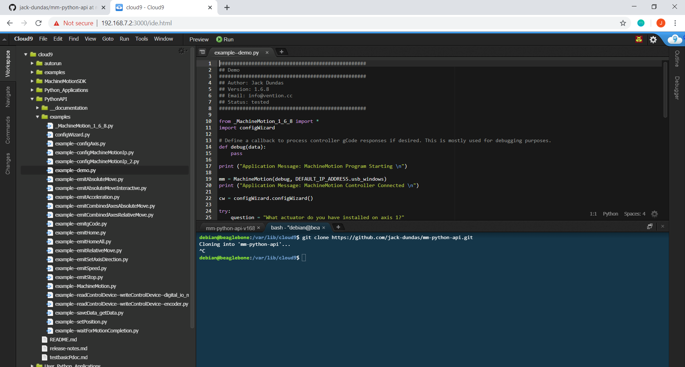
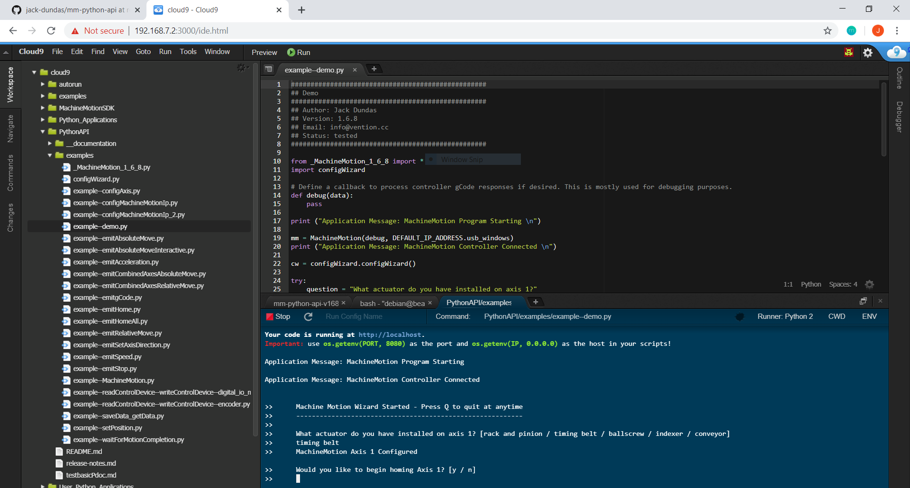

The MachineMotion Python API simplifies motion control and provides an intuitive, human-readable way to bring your equipment to life.
Inexperienced programmers should consider using MachineLogic's code-free visual sequence editor to create simple motion programs.
However, for developing complex applications Python programs offer several attractives advantages. They are generally the optimal choice if:
Wire up the MachineMotion controller (How-To) then type the following commands in the terminal:
$ git clone https://github.com/VentionCo/mm-python-api
$ python mm-python-api/examples/demoTo get started with the MachineMotion Python API:
|
1. Go to https://www.python.org/downloads/ to download the latest version of python |
|
2. Open and run the installer. If using Windows, ensure "Add python to path" option is selected |
The MachineMotion controller software comes pre-installed on the MachineMotion controller. There are two versions of the Python API, so the correct version of the Python API must be selected. The table below shows which version should be downloaded.
| Controller Software | Python API | Git Clone | Link |
|---|---|---|---|
| v1.2.11 and earlier | Python API v1.6.8 | git clone https://github.com/VentionCo/mm-python-api/tree/release/v1.6.8 |
v1.6.8 |
| v1.12.0 and later | Python API v2.0+ | git clone https://github.com/VentionCo/mm-python-api/tree/release/v2.0) |
v1.12.0 |
If your MachineMotion controller is connected to your computer (192.168.7.2), you can check its software version here
Open the command prompt (for Windows) or the terminal (for Mac or Linux), navigate to your destination folder and paste the suitable 'git clone' command
Follow the download link above and unzip the contents in your directory of choice
Open the command prompt (for Windows) or the terminal (for Mac or Linux) and run the following installations
$ pip install -U socketIO-client
$ pip install -U pathlib
$ pip install -U paho-mqttThe MachineMotion Python library is now installed and ready to use! Continue below to start your first custom program.
MachineMotion connects to a laptop through Ethernet. If your laptop does not have an ethernet port, use the USB to ethernet converter included with the MachineMotion.
If you require more information about how to setup you controller to communicate with your computer or network, consult the resource below.
There are 2 ways to load a custom python script onto MachineMotion: with the command line or with the cloud9 IDE.
 |
- Open the command prompt (for windows) or terminal (for Mac and Linux) - Browse to the directory where the MachineMotion API library is saved - Execute the demo program with the following line of code: - python examples/example--demo.py - The demo program will launch. Press q or Ctrl+C to quit at anytime. |
 |
Open up the Cloud9 IDE: http://192.168.7.2:3000/ide.html |
 |
Copy and paste the mm-python-api folder into cloud9 |
|  | Navigate to examples/example--demo.py and press F5 or 'run' to execute the program |
|  | Press 'Run' in the top toolbar of the cloud9 IDE |
Congratulations on loading your Python API script!
Continue your journey by reading the docs and reading the example codes. Application Programming Interface: Python v1.6.8